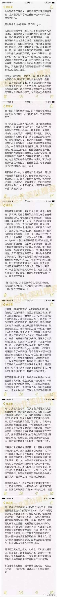
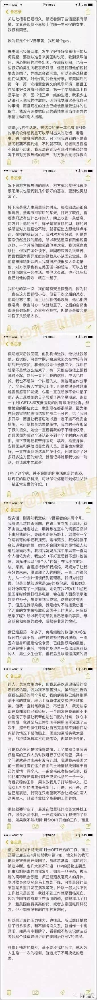

微信号 motss2002
功能介绍 杭州酷儿论坛（motss.info）致力于为杭州及周边地区学生性少数人群提供一个多元、健康、平等的环境，促进自我认同和社会认可。
转载自微博“北美吐槽君”
转载自微博“北美吐槽君”

真爱生命，让我们一起携手阳光行动
酷儿论坛携手杭州疾控中心，于杭州13大疾控中心开展免费HIV检测与咨询活动。各位童鞋们可以关注杭州同志中心于ZANK服务平台上发起的此次活动并积极响应~
酷儿论坛motss.info致力于为杭州学生性少数群体营造一个多元、健康、平等的环境